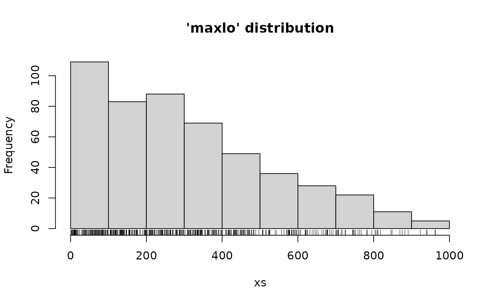

'maxlo' distribution
Maxlo.RdDensity function, distribution function, quantile function and random generation for the 'maxlo' distribution.
Usage
dmaxlo(x, scale = 1.0, shape = 4.0, log = FALSE)
pmaxlo(q, scale = 1.0, shape = 4.0, lower.tail = TRUE)
qmaxlo(p, scale = 1.0, shape = 4.0)
rmaxlo(n, scale = 1.0, shape = 4.0)Arguments
- x, q
-
Vector of quantiles.
- p
-
Vector of probabilities.
- n
-
Number of observations.
- scale, shape
-
Shift and shape parameters. Vectors of length > 1 are not accepted.
- log
-
Logical; if
TRUE, the log density is returned. - lower.tail
-
Logical; if
TRUE(default), probabilities are \(\textrm{Pr}[X <= x]\), otherwise, \(\textrm{Pr}[X > x]\).
Details
The 'maxlo' distribution function with shape \(\alpha>0\) and scale \(\beta>0\) is a special case of Generalised Pareto (GPD) with negative shape \(\xi < 0\) and location at zero. This is the finite upper endpoint case of the GPD. Its name is nonstandard and was chosen to suggest some form of symmetry with respect to the Lomax distribution.
The survival function is $$S(y) = \left[1-y/\beta\right]^\alpha \qquad 0 < y < \beta$$
This distribution has a coefficient of variation smaller than \(1\).
Value
dmaxlo gives the density function, pmaxlo gives the
distribution function, qmaxlo gives the quantile function, and
rmaxlo generates random deviates.
Note
The 'maxlo' and GPD parameters are related according to $$\alpha = -1/\xi, \qquad \beta = -\sigma/\xi.$$ where \(\sigma\) is the scale parameter of the GPD. Since only GPD with \(\xi > -0.5\) seem to be used in practice, this distribution should be used with \(\alpha > 2\).
This distribution can be used in POT to describe bounded excesses
following GPD with shape \(\xi < 0\). The scale parameter
\(\beta\) then represents the upper end-point of the excesses,
implying the finite upper end-point \(u + \beta\) for the levels,
where \(u\) is the threshold. It can be used in Renouv
with a fixed scale parameter, thus allowing a control of the upper
end-point.
This distribution is simply a rescaled version of a beta distribution and also a rescaled version of a Kumaraswamy distribution. The name "maxlo" is used here to suggest a form of symmetry to Lomax distribution.
See also
fmaxlo to fit such a distribution by Maximum Likelihood.
Examples
xs <- rmaxlo(500, shape = 2.2, scale = 1000)
hist(xs, main = "'maxlo' distribution"); rug(xs)

xs <- rmaxlo(500, shape = 4, scale = 1000)
hist(xs, main = "'maxlo' distribution"); rug(xs)
 x <- seq(from = -10, to = 1010, by = 2)
plot(x = x, y = dmaxlo(x, shape = 4, scale = 1000),
type = "l", ylab = "dens",
col = "orangered", main = "dmaxlo and dgpd")
abline(h = 0)
lines(x = x, y = dgpd(x, shape = -1/4, scale = 250),
type = "l",
col = "SpringGreen3", lty = "dashed")
x <- seq(from = -10, to = 1010, by = 2)
plot(x = x, y = dmaxlo(x, shape = 4, scale = 1000),
type = "l", ylab = "dens",
col = "orangered", main = "dmaxlo and dgpd")
abline(h = 0)
lines(x = x, y = dgpd(x, shape = -1/4, scale = 250),
type = "l",
col = "SpringGreen3", lty = "dashed")